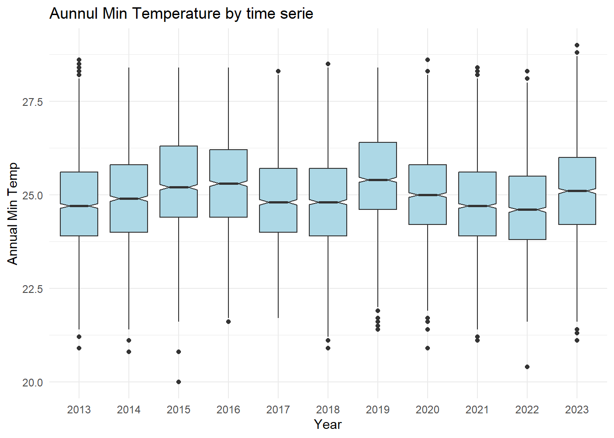
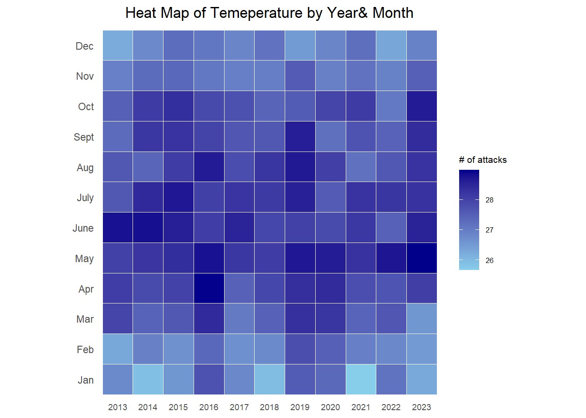
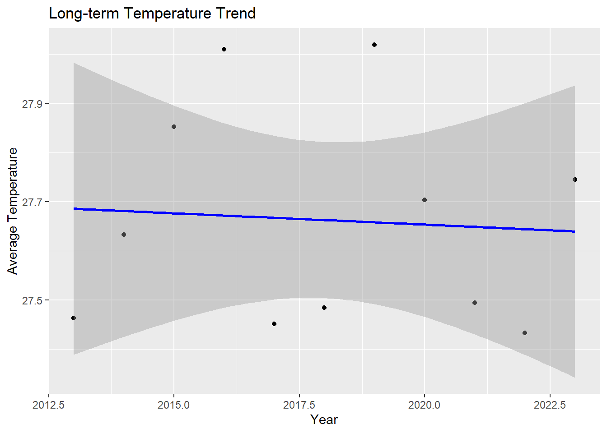

pacman::p_load(ggrepel, patchwork,
ggthemes, hrbrthemes,
scales, viridis, lubridate,
ggthemes, gridExtra, readxl, knitr,
data.table, CGPfunctions,
ggHoriPlot, tidyverse,ggiraph, plotly,
patchwork, DT,ggdist, ggridges, ggthemes,
colorspace,ggstatsplot,readxl, performance,
parameters, see,ungeviz, plotly, crosstalk,
DT, ggdist, ggridges,colorspace, gganimate,
FunnelPlotR,readxl, gifski, gapminder,gganimate,ggpubr, ggplot2)Take Home Exercise 04
Temperature
1.Introduction

In this section, we will delve into the historical temperature data of Singapore, aiming to gain a thorough insight through the creation of various interactive tools. Additionally, we will employ statistical tests and visualization techniques to substantiate the claim depicted in the charts—that there has been a temperature increase of 0.25 degrees per decade.
2. Install Package
3. Data Preparation
3.1 About the Data
We aggregate monthly observations from 2013 to 2023, sourced from five distinct weather stations strategically located across Singapore’s geographic regions. This process involves the meticulous integration of data sets to represent a comprehensive view of Singapore’s climatic conditions over the specified period. This aggregated data set is already created for our group project.
3.2 Put Data into R environment
weatherdata <- read_rds("data/weatherdata.rds")
summary(weatherdata) Station Year Month Day
Length:19629 Length:19629 Length:19629 Length:19629
Class :character Class :character Class :character Class :character
Mode :character Mode :character Mode :character Mode :character
Rainfall MeanTemp MaxTemp MinTemp
Min. : 0.000 Min. :22.20 Min. :22.80 Min. :20.00
1st Qu.: 0.000 1st Qu.:26.90 1st Qu.:30.90 1st Qu.:24.10
Median : 0.200 Median :27.70 Median :32.00 Median :25.00
Mean : 6.327 Mean :27.66 Mean :31.75 Mean :25.01
3rd Qu.: 6.000 3rd Qu.:28.50 3rd Qu.:32.90 3rd Qu.:25.90
Max. :210.600 Max. :30.80 Max. :36.80 Max. :29.00
NA's :460 NA's :649 NA's :587 NA's :587
MeanWind MaxWind
Min. : 0.400 Min. : 8.30
1st Qu.: 5.800 1st Qu.: 27.00
Median : 7.200 Median : 31.70
Mean : 7.984 Mean : 32.77
3rd Qu.: 9.400 3rd Qu.: 37.40
Max. :31.300 Max. :105.50
NA's :800 NA's :796 3.3 Data Wrangling
We will develop multiple sub-tables to perform the analysis
annual_avg_temp <- weatherdata %>%
group_by(Year) %>%
summarise(AnnualAverageMeanTemp = mean(MeanTemp, na.rm = TRUE))
monthly_avg_temp <- weatherdata %>%
group_by(Year,Month) %>%
summarise(AnnualAverageMeanTemp = mean(MeanTemp, na.rm = TRUE))
monthly_avg_temp$Month <- factor(monthly_avg_temp$Month,
levels = 1:12,
labels =
c("Jan", "Feb", "Mar", "Apr", "May", "June", "July", "Aug","Sept", "Oct", "Nov", "Dec"),
ordered = TRUE)
Daily_avg_temp <- weatherdata %>%
group_by(Year,Month,Day) %>%
summarise(AnnualAverageMeanTemp = mean(MeanTemp, na.rm = TRUE))4.Exploratory Data Analysis
4.1 interactive plot: Annual Average Temperature by Station
annual_avg_temp_bystation <- weatherdata %>%
group_by(Year,Station) %>%
summarise(AnnualAverageMeanTemp = mean(MeanTemp, na.rm = TRUE))
plot_ly(data = annual_avg_temp_bystation,
x = ~Year,
y = ~AnnualAverageMeanTemp,
color = ~Station)Observation: Over the past decade, Changi Station, situated in the East Region, has recorded higher temperatures compared to other regions.
4.2 Historical Temperature Comparison By Stations
monthly_avg_temp_bystation <- weatherdata %>%
group_by(Year,Month,Station) %>%
summarise(AnnualAverageMeanTemp = mean(MeanTemp, na.rm = TRUE))
monthly_avg_temp_bystation$Month <- factor(monthly_avg_temp_bystation$Month,
levels = 1:12,
labels =
c("Jan", "Feb", "Mar", "Apr", "May", "June", "July", "Aug","Sept", "Oct", "Nov", "Dec"),
ordered = TRUE)
gg <- ggplot(monthly_avg_temp_bystation ,
aes(x = Month,
y = AnnualAverageMeanTemp,
size = AnnualAverageMeanTemp,
color = as.factor(Station)
)) +
geom_point(aes(size = AnnualAverageMeanTemp,frame=Year),
alpha = 0.7) +
scale_size(range = c(2, 12)) +
labs(x = 'Month',
y = 'Daily Mean Temp') +
theme(legend.position='bottom') +
guides(color = guide_legend(title = "Year",
override.aes = list(size = 3),
ncol = 1))
ggplotly(gg)Observation: The same result can be obtained as 4.1, over the past decade, Changi Station has recorded higher temperatures compared to other regions.
4.3 Box plot: Annual Temperature Comparison
ggplot(weatherdata, aes(x = Year, y = MeanTemp)) + geom_boxplot(fill = "lightblue", notch = TRUE) + labs(title = "Aunnul Mean Temperature by time serie", x = "Year", y = "Annual Mean Temp") + theme_minimal()ggplot(weatherdata, aes(x = Year, y = MaxTemp)) + geom_boxplot(fill = "lightblue", notch = TRUE) + labs(title = "Aunnul Max Temperature by time serie", x = "Year", y = "Annual Max Temp") + theme_minimal()
ggplot(weatherdata, aes(x = Year, y = MinTemp)) + geom_boxplot(fill = "lightblue", notch = TRUE) + labs(title = "Aunnul Min Temperature by time serie", x = "Year", y = "Annual Min Temp") + theme_minimal()
Observation: Upon analyzing the maximum, minimum, and average temperatures over the past decade, no definitive trend of increasing temperatures emerges. Further, more detailed examinations will be carried out to substantiate this observation.
4.4 HeatMap: Mean Temperature by Year and Month
ggplot(monthly_avg_temp,
aes(Year,
Month,
fill = AnnualAverageMeanTemp)) +
geom_tile(color = "white",
size = 0.1) +
theme_tufte(base_family = "Helvetica") +
coord_equal() +
scale_fill_gradient(name = "# of attacks",
low = "sky blue",
high = "dark blue") +
labs(x = NULL, y = NULL,
title = "Heat Map of Temeperature by Year& Month") +
theme(axis.ticks = element_blank(),
axis.text.x = element_text(size = 7),
plot.title = element_text(hjust = 0.5),
legend.title = element_text(size = 8),
legend.text = element_text(size = 6) )
Observation: Analyzing the heat map, there’s no definitive indication of a rising temperature trend over the past decades. However, it is observable that Singapore experiences its warmest months from April through October.
4.5 Monthly Average Temperature Trends by Year
ggplot(monthly_avg_temp, aes(x = factor(Month), y = AnnualAverageMeanTemp, group = Year, color = factor(Year))) +
geom_line() +
geom_point() +
theme_minimal() +
labs(title = "Monthly Average Temperature Trends by Year", x = "Month", y = "Average Temperature")
Observation: Adopting this method allows for a clearer perspective on Singapore’s temperature trends. By analyzing the data in this manner, we can independently verify the finding that Singapore’s warmest months span from April to October, paralleling insights obtained from heat map visualizations.
5 Confirmatory Data Analysis
5.1: Trend Analysis of Temperature
Since in the visualization part, we can not detect any specific trend of temperature from past decade. We will perform a trend analysis to examine whether there is a general trend in the temperature data over these years, indicating global warming or any other significant climatic change
model <- lm(AnnualAverageMeanTemp ~ as.numeric(Year), data = annual_avg_temp)
summary(model)
Call:
lm(formula = AnnualAverageMeanTemp ~ as.numeric(Year), data = annual_avg_temp)
Residuals:
Min 1Q Median 3Q Max
-0.22309 -0.19482 -0.04792 0.14069 0.36155
Coefficients:
Estimate Std. Error t value Pr(>|t|)
(Intercept) 36.988210 44.823260 0.825 0.431
as.numeric(Year) -0.004621 0.022212 -0.208 0.840
Residual standard error: 0.233 on 9 degrees of freedom
Multiple R-squared: 0.004786, Adjusted R-squared: -0.1058
F-statistic: 0.04328 on 1 and 9 DF, p-value: 0.8398ggplot(annual_avg_temp, aes(x = as.numeric(Year), y = AnnualAverageMeanTemp)) +
geom_point() +
geom_smooth(method = "lm", color = "blue") +
labs(title = "Long-term Temperature Trend", x = "Year", y = "Average Temperature")
Based on this analysis, there doesn’t appear to be a significant trend in the annual average mean temperature over the years in your data set. The changes in temperature from year to year are not statistically significant, suggesting that the temperature has remained relatively stable over the period under consideration, at least within the sensitivity of this model. At the same time, the slope of the line is -0.004621, indicating that the temperature decreases by approximately 0.0046 units for each additional year. However, this is a very small change and may not be practically significant. We can infer that relying solely on temperature data from the past decade to predict future temperatures will likely not result in an increase of 1.6 to 4.6 degrees, as previously suggested by the chart.